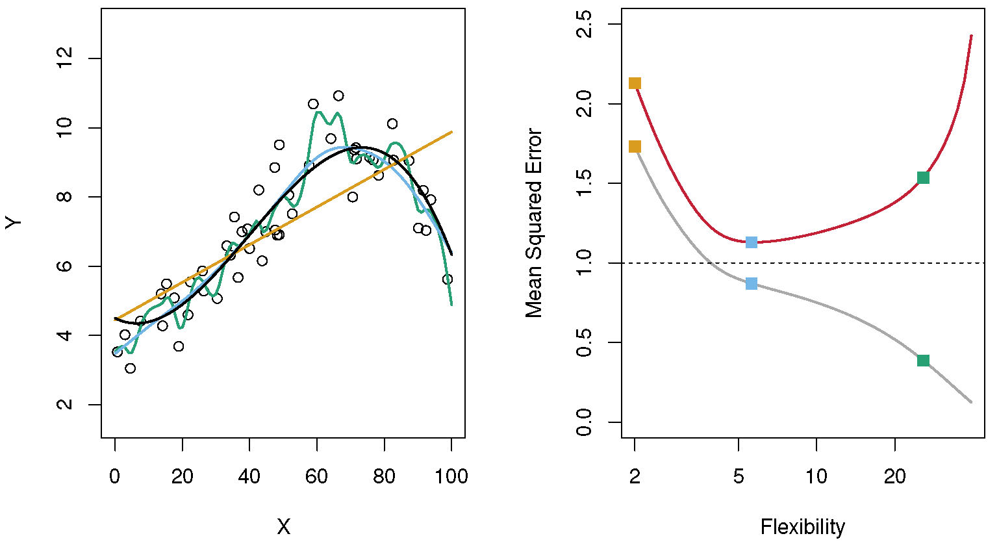

Subset Selection
Overview
In this unit, we will cover the idea of subset selection.
Learning Objectives
- Know what subset selection is and when to use it.
Introduction
In our previous discussion of model performance, you were introduced to the problem of overfitting. Here is a quick repeat. The idea is that you generally want to make inferences or predictions not for the data you used to fit your model, but for new/different data.
If the goal was to fit the data you have as well as possible, you could always achieve that with a complex model. If you have N observations, you can find a polynomial of degree N-1 that hits all of your data points. However, as discussed when we talked about the bias-variance trade-off, a model that gets too close to the data used for fitting will generally not perform well when applied to new data.
You want a model that gets the trade-off between high bias (model not flexible enough to capture all the patterns seen in the data) and high variance (model too flexible, will capture noise as well) right.
I showed the figure below previously. I’m repeating it here as a refresher. The yellow model (straight line), in this example, has too much bias. The model is too simple to capture all the important patterns, and it underfits the data. The performance metric (mean square error here) is high for both the training and test/CV data (yellow squares on the left of the right panel.) The green model (very wiggly line) has too much variance. It goes too close to the data used for fitting and doesn’t generalize to new data, it overfits the data. This reflects itself in good performance (low MSE) for the train data, but high MSE for the test/CV data (green squares on left of the left panel) In this example, the blue model has the optimal model complexity. It captures the overall pattern in the data, without trying to fit the noise/variability. This manifests itself with the best performance on the test/CV data (blue squares).

We talked about cross-validation and how it can be used to help you determine if your model overfits (or underfits). What we haven’t discussed is how to find a model that gets the trade-off between bias and variance right. Two common techniques are subset selection and regularization.
The general idea for these strategies is that if you let the model use all the predictors you have (this is called a full or sometimes saturated model), it might be too big and overfit the data. You can get some hint of that if the cross-validated performance measure for a full model is not better than that for a null model or a single-predictor model. The latter ones are likely too simple and underfit (unless none or a single predictor describes your data), while the full model is likely too flexible and overfits. So you want to find a model that only uses the important/useful predictors.
Subset selection
You might have already seen subset selection in another statistics class. If that is the case, this is a refresher. Though you might not have used the approaches I describe here to perform subset selection. Subset selection is also called variable selection or feature selection. The overall idea is that you try models with different numbers of predictors included/excluded, you evaluate its performance (using cross-validation to get an honest estimate of model performance on new data), and pick the reduced/sub-model with the best performance. The performance is measured using whatever metric you decided to optimize on (SSR, RMSE, Accuracy, F1 score, etc.). There are different ways you can go about trying different sub-models, as described in the following sections.
Forward selection
In forward selection, you start with the null-model (no predictors), then evaluate all single-predictor models. The best-performing 1-predictor model is chosen, and you build all 2-predictor models on top of that chosen 1-predictor model. You choose the best 2-predictor model, then go on to add a third, and do that until adding any further predictors does not lead to a model that performs better (again, measured by CV on the test set) than the smaller model. E.g., you might find that adding any of the remaining 3rd predictors does not lead to a better-performing model than the 2-predictor model you already have. Then you stop here and pick the 2-predictor model as your best.
Let’s consider an example. Say you want to predict BMI based on age, sex, calorie intake, and exercise level. Since BMI is continuous, we can consider a linear regression model, and we might try to minimize RMSE between model-predicted BMI and actual measurements. We start by computing RMSE for the null model. Then we compute RMSE for all 1-predictor models. Assume that all 1-predictor models have RMSE lower than the null model, and the lowest RMSE (all computed using cross-validation) of the 1-predictor models is the one that includes calorie intake. Next, you try all 2-predictor models that include calorie intake. Among those, a model with calorie intake + exercise level has the lowest RMSE, and it’s also lower than the model with calorie intake only. Next, you try all 3-predictor models that include the 2 chosen predictors. In this example, only 2 of those 3-predictor models are possible, namely calorie intake + exercise level + age and calorie intake + exercise level + sex. Let’s assume both of those models have RMSE that is larger than the 2 predictor model. Note, it is important to compute RMSE through cross-validation since the RMSE evaluated on the data used for fitting will always be lower for the bigger model. We thus found our best model, namely one that includes the 2 predictors calorie intake + exercise level.
Backward selection
Backward selection is essentially the reverse to forward selection: You start with the model with all predictors, then evaluate all models with one predictor dropped. The smaller model with the best performance is your choice. You then drop each predictor at a time from that model. You continue until dropping predictors does not improve performance anymore. Then you keep the model with the best performance. Note that this method does not work on datasets that have more predictors than observations (e.g., most -omics type data).
Let’s consider the above example again. We now start with a model that includes all 4 predictors and compute cross-validated RMSE. Next, we drop each predictor and try all 3-predictor models. Let’s say the one that dropped exercise level is the 3-predictor model with the lowest RMSE, lower than all other 3-predictor models, and lower than the full model. Next, we drop each variable from the current best candidate 3-predictor model, which is age + sex + calorie intake. All of the 2-predictor models have RMSE larger than the 3-predictor model. We thus found our final model, with the 3 predictors age + sex + calorie intake.
Note that it is also possible to do “forward-backward” selection: you can choose to start with the full or reduced model, but the method is allowed to add/remove predictors at every step depending on what improves performance most.
Exhaustive subset selection
You might have noticed that in my example, forward selection and backward selection do not necessarily produce the same model. The reason for that is that neither forward- or backward-selection try all possible models (predictor combinations). Both approaches use what is called a greedy strategy. Once they included or excluded a predictor, it can never be dropped or included. Once you picked your 1-predictor model, all subsequent models will consist of that 1 predictor model - even if there might be a better performing 2-predictor model that doesn’t include the 1st predictor you picked. The same holds for dropping predictors in backward selection.
Also, as in my example, often (but not always), the final model determined through backward selection tends to include more predictors than a model determined through forward selection. In such a case, you have to decide which model to choose. Alternatively, you can try a different way of choosing the model. One approach is to try models with all combinations of predictors. This is called exhaustive subset selection, all subsets selection, or best subset selection (although note that “best subset selection” can also refer to a different method which still hasn’t gained much traction). If you have only a few predictors, you can try every combination of predictors. However, once you have more than 5-10 predictors (depending on the number of observations), trying every combination of sub-models would be too time-consuming. Therefore, most of the time, such an exhaustive feature selection is not feasible.
Other subset selection methods
There have recently been a number of approaches that try to be somewhat smarter in finding the best model, without having to try every combination. The caret package has several methods, such as Genetic Algorithms and Simulated Annealing. Those methods often do a good job finding a very good sub-model in a reasonable amount of time. While the only guarantee that you found the single best model is to try them all using exhaustive subset selection, these modern approaches usually find a model that is either the best or at least close to the best while doing so rather efficiently. See sections 18-22 of the caret manual for more information if you are interested. The mlr/mlr3 packages also have similar such selection methods. tidymodels currently does not have any subset selection procedure implemented (see more below).
Manual subset selection
All the approaches above use cross-validated performance of some metric to determine which predictors should be included in the model. Another, still commonly used strategy is to do subset selection manually. The analyst usually starts with a simple model containing just one predictor (the most important one), and then decides based on model results (e.g., systematic deviations in the residuals) and/or based on scientific knowledge, if adding additional predictors is justified. For a skilled analyst with a lot of subject matter expertise, this can lead to models that are all-around very good. They have good performance, make scientific sense, and are still simple. Unfortunately, this requires a lot of knowledge, time and careful analysis. Also, the analyst needs to honestly report any model they tried, not just the one they end up with. Otherwise they are using and not reporting researcher’s degrees of freedom, which leads to overfitting. Most analyses are not done that way.
I mentioned this before in various places and it’s a theme throughout the course, that unless data is collected and analyzed using pre-specified protocols (e.g., a clinical trial for FDA approval) it is almost always the case that scientists have so much flexibility during the data collection and analysis stages that p-values and similar statistical measures are meaningless. The Researcher’s degrees of freedom issue is everywhere and essentially impossible to get rid of. For more on this topic, see the Pitfalls section on the General Resources page.
All of this applies to manual subset selection (which is why I’m thinking about it here and adding this note), but it is more general and applies to every step in a scientific project.
Subset selection and main predictors
Sometimes, you have predictors of particular interest, e.g., your main exposure. What if the subset selection algorithm removes those variables? That can happen. One reason is that the predictor/variable you thought was important for the outcome is in fact not. Alternatively, it could be that your main variable correlates strongly with one or a combination of other variables, and the model routine kept those other variables instead. Some packages in R that do subset selection allow you to specify certain predictors that are kept, no matter what. This way you can keep the ones you know are important, and let the computer/stats decide if the other ones are useful or not. It is also worth thinking about what the model is trying to tell you. If it throws out the variable you are interested in, it means it might not be as important in influencing the outcome as you thought. This is a situation that requires careful thinking and judgement and then based on your best judgment, you proceed.
Additional comments
Most commonly, subset selection is used by starting with a full model that includes each predictor/feature in linear form only. However, there is no reason why one couldn’t build a full model that includes every predictor in more complicated forms. For instance, one could start with a model that includes each term linear and quadratic, e.g.
\[Y=b_0 + b_1X_1 + b_2X_1^2 + b_3 X_2 + b_4 X_2^2 + ...\]
Interaction terms (e.g., \(X_1 X_2\)) are of course also possible. One could then perform subset selection by removing each term (though if one removes the simple term, \(b_iX_i\), it is often a good idea to remove the higher-order terms which include \(X_i\), especially interaction terms). It is rarely done, and I don’t think I’ve seen an example of this in the literature. If interactions or higher-order terms are suspected, one often uses a different type of machine learning model that more naturally allows relations between predictors and outcome that are not linear (e.g. quadratic or other complicated forms). We’ll visit some of those models soon.
You might have learned other approaches to compare model performance, e.g., using AIC or similar metrics or F-tests. As previously mentioned, I consider cross-validation the most robust and reliable method and, thus, do not discuss the others. AIC or similar might sometimes be necessary if the cross-validation approach takes too long to run, e.g., if you have a lot of data or a complicated model. I don’t see a use for any of the other methods. (But I’m happy to change my mind if someone gives me some convincing reasons 😃.)
The subset selection methods described above can be applied to any generalized linear model (GLM), such as linear, logistic and many others. For subset selection to work, variables need to show up in such a form that they can be added or removed easily. We will soon look at machine learning models where the predictor variables are part of the model in a complicated manner and can’t be easily added/removed in a stepwise manner. Thus, subset selection as described here might not work for such models. However, the similar and related term of feature selection does apply. The term comes from ML, the idea is similar: Try to find those features/variables that are relevant. Many of those models have some internal mechanisms that allow the model to decide that a certain predictor is not useful and thus remove it. We’ll discuss that more soon.
Maybe avoid subset selection
So I just explained in detail how subset selection works and what it tries to accomplish (make simpler models and prevent overfitting), and now I’m going to tell you to maybe avoid it 🤦?!
If you go to the statistical literature or online, you will find papers and posts telling you why subset selection is bad. Five myths about variable selection is a nice paper that talks about it.. Many similar papers and discussions exist. If you want to see more, check Wikipedia or do a Google search on problems with stepwise selection. You’ll find plenty. The general criticism is that subset selection doesn’t solve the problem of overfitting. Instead, by trying lots of different models, it might make it worse. Most of the criticism is directed at doing subset selection through AIC, F-test or other criteria, not using CV. I haven’t yet seen a convincing article that explains that subset selection is equally bad if one uses CV (if you find one, please let me know!) Even when using CV, subset selection might still lead to overfitting, especially if the amount of data you have is not large and thus CV estimates not too reliable. Probably because of that, and also because there are other methods, such as regularization, especially the LASSO method, (which we’ll cover next), that accomplish similar goals often more efficiently, the tidymodels folks seem to not be interested in implementing subset selection anytime soon.
Because of this, and since I don’t want to jump around different R packages more than needed, we won’t actually practice subset selection. But it’s an approach worth knowing about. While it is an approach that - in my opinion - can be useful at times, you might want to consider other methods at reducing overfitting first, e.g., the regularization approach we discuss next.
Further materials
For more details on subset selection, see section 6.1. of ISLR and sections 18-22 of the caret manual.
As just mentioned, since tidymodels currently doesn’t support the subset selection approaches described in this StackOverflow question, we won’t try them. The next topic, regularization, does something similar to subset selection and is often more computationally efficient. We will try some of those methods.
In Hastie et al. 2020, some rather famous statisticians discuss subset selection and how it compares to methods like LASSO.